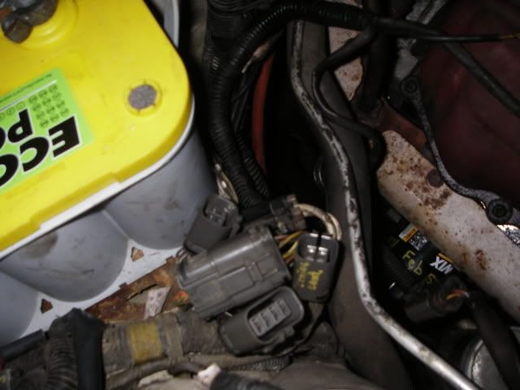
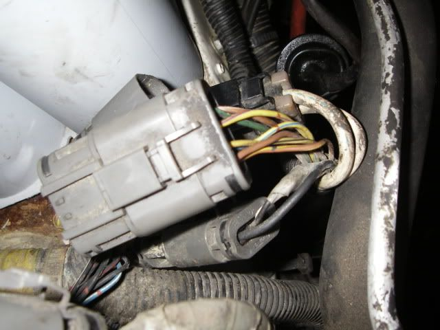
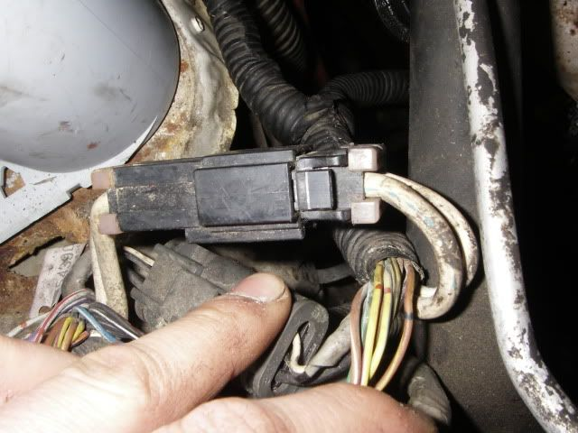
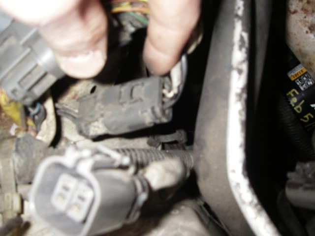

-
Hey yes i have searched it, I own a 85 turbo and got the 71c in and the only thing holding me back is this damn switch. I have a 8 pin connector with 7 wires, all different colors than ones on xenon stated. looking towards at the connector going towards the tranny starting in the top left with the lock snap thing on top
[Green/W] [Yellow/purple] [black/yellow] [brown]
[brown/white] [ no wire] [yellow/blue] [brown/yellow]
sorry im rushed but thanks in advanced -
I think you should ask a question.Wastegate wrote: Hey yes i have searched it, I own a 85 turbo and got the 71c in and the only thing holding me back is this damn switch. I have a 8 pin connector with 7 wires, all different colors than ones on xenon stated. looking towards at the connector going towards the tranny starting in the top left with the lock snap thing on top
[Green/W] [Yellow/purple] [black/yellow] [brown]
[brown/white] [ no wire] [yellow/blue] [brown/yellow]
sorry im rushed but thanks in advanced85 Z31 6.0 LSX turbo 766whp/792wtq
04 GTO, LS6, big cam, porting, N20… underway for summertime daily driver. -
If you have an "85" it might have had the 4n71b, and not the "e" version. This would lead you to only having the 4 pin inhibitor switch. I don't think you are looking at the right plug because for sure it's an 8 pin with 8 wires.
Mine had the 4, and I actually have the harness to wire in with the 8. I will have to do this one day as I can't get them to currently work with the 4 pin inhibitor switch. Who needs reverse lights anyhow lol.Usual Z31 suspect: Garage Queen (aka broken)

-
Factory manual cars FTW :P- VG30DET (HE341) 86 300ZX - 1982 280ZX Turbo - Headered NA 1986 300ZX 2+2 - 2000 Xterra - -
Yeah well sorry i was quite rushed as I was late for work cause of the Z and thought most could figure it out… What wires do i cross then… Anyway yeah I have seen that in other posts, an 85 with a 84 tranny 4 pin. However there are only 3 plugs coming from the tranny, The 8 pin I described, One large 2 wire one and another single 3 pin one. The three 2pin connectors i unplugged from the auto combine with another "harness" that goes under the front of the motor go to this area. Wait ill just flash a pic. Maybe im an absolute retard and deserve to be flamed?
yes remaned optima… cheap

8 pin connector

large 2 pin

3 pin sorry the one sticking up in your face is for cruise control.

So any even suggestions are appreciated. Or anyone know what should happen when the key is switched to run? I checked all the wires of the 8 pin with my multimeter and 2 wires were full 12V 3 others were like 3V. 2 were dead if I remember. Yes this car ran perfect and started every time with the auto last week.
Thanks -
i just had this problem but my wires are different colors than yours. if you were having the plug face you and the clip part on top the ones i had to jump was 1 in each corner. So off your wires it would be brown/white and brown/yellow. Mine were black and black/red so I dont know what to tell you. Yours is probably brown and one of the other ones though.86 NA
87 Turbo
Member of the "zetto sun-ichi" group
Local MN car forum/club anyone welcome..... fivezeroseven.net join! -
thanks for the replies, but i figured it out, not enough sleep haha. MODs can delete this thread please -
I hate to necro-bump this, BUT I'm having the same problem (7-pin plug on an 85 auto with colors that don't match the Xenon page). What did you do to fix it? I was getting on here to look for possible solutions…Wastegate wrote: thanks for the replies, but i figured it out, not enough sleep haha. MODs can delete this thread please
Edit: I got it. I found the inhibitor relay and jump pins 6 and 7. Note to anyone reading this, the diagram on top of the relay does not correlate with the pins on the bottom. Look on the bottom of the relay and the prongs and numbered.
1985 300ZX Turbo GLL ^Click for log^
Originally posted by nater86zx -
i am at the end of my rope on this got the whole dang thing done except this as well and have an 88t i just put a r30a in. the car had the automatic pulled already when i got it and i have the same color plug wires coming from what i think is the inhibitor switch, its identical to the picture above. what am i doing wrong i read every write up there is 10 times and it says JUST do this simple thing and its not making any sense to me i have tried jumping multiple different wires based on instructions ive read so far with no luck.
I WILL PAY ANYONE IN THE TEMPE AZ Area to come help me that has done this or can help me get it done.Last edited by Geoffs86zx; 11-14-2016, 11:11 PM.

Copyright © 2006–. All rights reserved. Privacy Policy